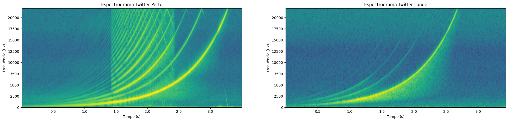
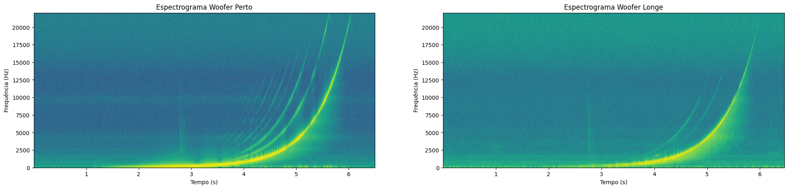
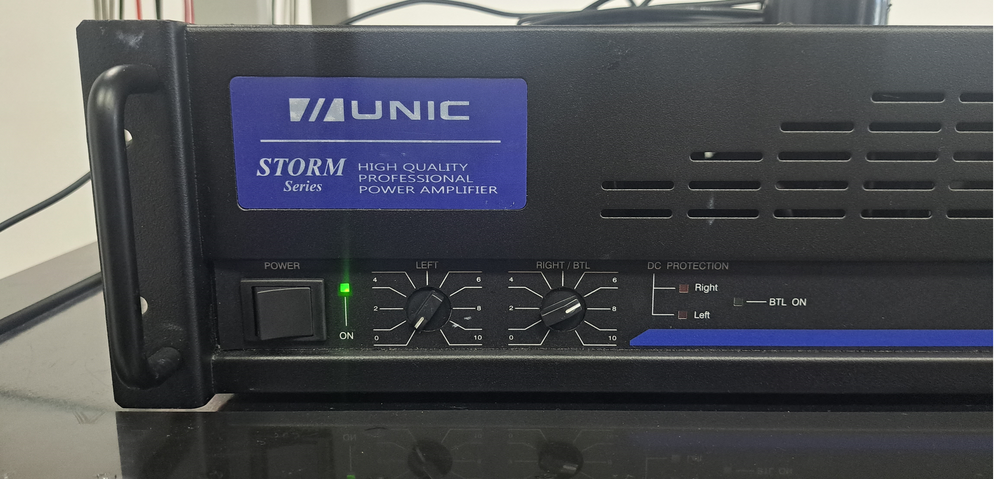
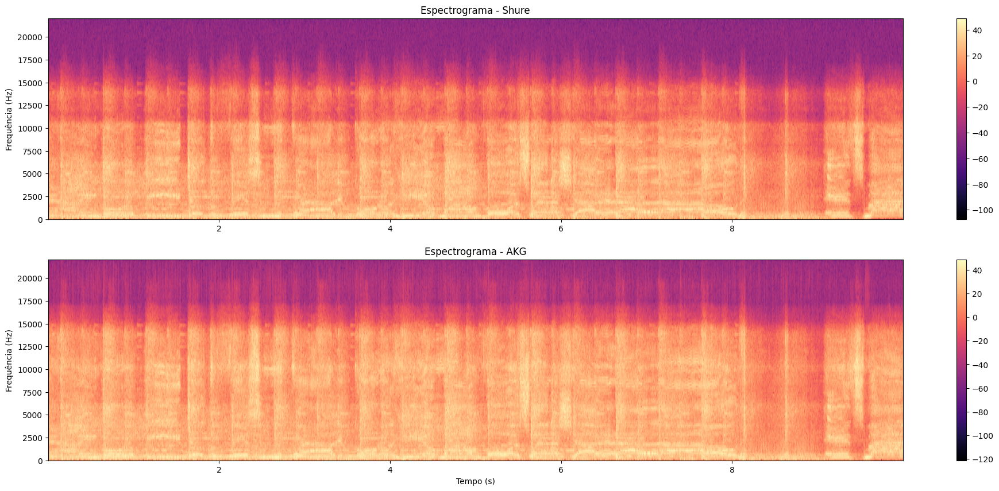
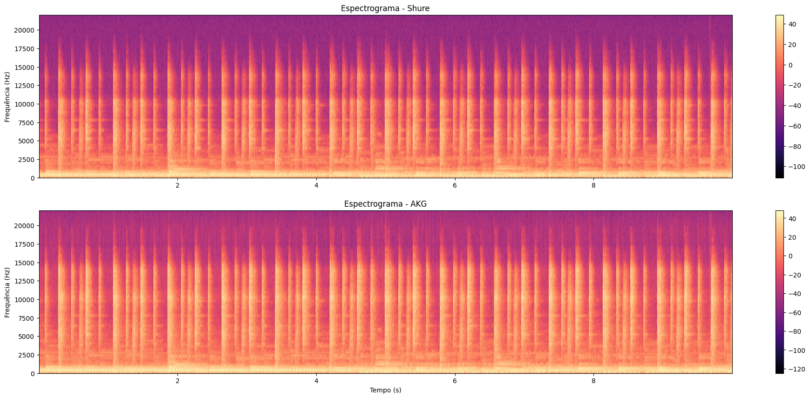
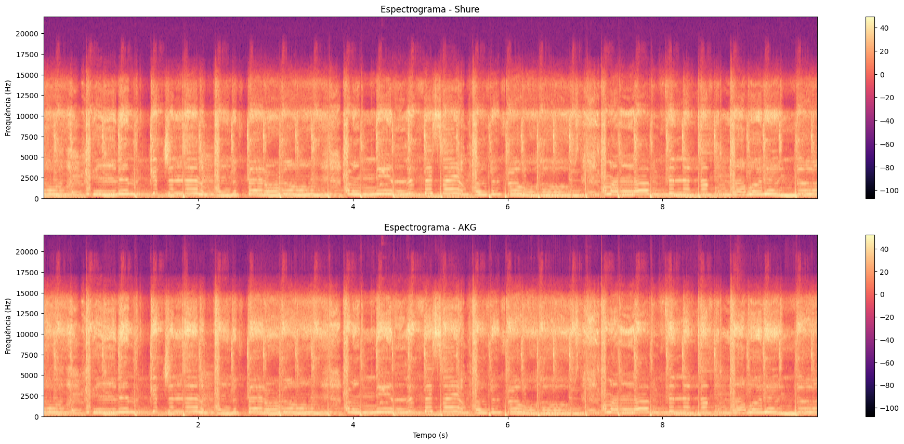

Conjunto 1 - Medições em Alto Falantes
Nesta etapa do experimento foram gerados sinais sweep utilizando o software REW, e reproduzido em um alto-falante TSI, em duas configurações distintas: uma somente o twitter, e outra somente do woofer. O sinal gerado foi capturado utilizado um microfone Behringer ECM8000, posicionado próximo e longe da fonte sonora, visando realizar medições near-field e far-field, como mostram as figuras abaixo. Nas gravações near-field, foram considerados as posições, "perto" e "meio da caixa".


A seguir são apresentados os áudios gravados, bem como seus respectivos espectrogramas.

Woofer

Conjunto 2 - Caracterização do Amplificador de Potência (PA)
Nesta etapa do experimento, 3 conjuntos de 3 alto-falantes cada conectados em série entre si foram ligados em paralelo, formando um grid de 3x3, como mostra a figura abaixo.
Os terminais destes alto-falantes foram conectados à saída de um amplificador Watson 2200 de 600W. Além disso, na saída do amplificador também foram conectadas as pontas de prova de um osciloscópio Keysight DSOX3024T para monitoramento do sinal amplificado, nos domínios do tempo e frequência.
Já o sinal de entrada foi gerado por um gerador de sinais Tektronix AFG 3021B, consistindo em uma onda senoidal com frequência de 1 kHz e amplitude de 3 Vpp. Vale destacar que, apesar de a recomendação do roteiro ser um sinal de 1 Vpp, os testes preliminares indicaram que o sinal gerado não tinha potência suficiente para que ocorresse distorções no sinal do amplificador, o que levou a escolha de aumentar a tensão do sinal para 3 Vpp.

No início do experimento, o botão do controle de ganho do amplificador foi ajustado para o valor de atenuação máxima, e então o ganho foi sendo aumentado gradativamente até que fosse possível observar distorções na forma da onda gerada. Uma vez identificado o ponto em que ocorria distorção, o botão foi ajustado novamente para o ponto imediatamente anterior a este fenômeno, que no marcador do amplificador correspondeu a -1dB.
A forma de onda e o espectro o sinal são apresentados abaixo:

A etapa seguinte do experimento consistiu em reproduzir todos os passos anteriores utilizando um amplificador Unic ZX Storm Series. As figuras abaixo apresentam o ajuste de ganho do amplificador, bem como o sinal gerado no tempo e na frequência. Vale destacar que, diferente do Wattson, este amplificador apresenta a gradação em uma escala de 0 a 10. Nos testes realizados, a ganho limiar para que houvesse distorção no sinal foi de aproximadamente 7 na escala do dispositivo.


Durante a aquisição dos dados, verificou-se que a distorção temporal dos sinais se deu por meio de um leve achatamento nos vales da onda do amplificador Wattson, e nos picos das ondas produzidas pelo segundo amplificador Unic.
Conjunto 3 - Testes com microfones
Shure SM57

O Shure SM57 é conhecido por sua resistência e versatilidade, sendo amplamente utilizado tanto em estúdios de gravação quanto em palcos de shows ao redor do mundo. Sua resposta de frequência equilibrada e padrão polar cardioide o tornam adequado para diversas aplicações musicais e de áudio. É considerado um padrão da indústria para a captura de som de instrumentos musicais e vocais em ambientes ao vivo e de estúdio. Algumas de suas aplicações típicas incluem: Instrumentos musicais, amplificadores de guitarra, caixas de bateria, instrumentos de sopro, vocais, gravação de estúdio e apresentações ao vivo. Suas especificações técnicas incluem:
- Impedância: 150 ohms (310 ohms reais).
- Resposta Frequência: 40Hz à 15KHz.
- Sensibilidade: Sensibilidade a 1KHz: -56.0 dBV/Pa (1.6 mV) 1 Pa = 94 dB SPL.
- Tipo: Diagrama Polar Cardióide.
- Conector: XLR de 3 pinos.
- Impedância nominal: 150 ohms (310 ohms reais) para conexão a entradas de microfone de baixa impedância;
- Dimensões: 32x32x157mm;
- Peso aproximado: 284 gramas.
AKG C214
O AKG C214 é um microfone condensador de diafragma grande projetado para aplicações de estúdio e gravação. Fabricado pela AKG, uma marca reconhecida na indústria de equipamentos de áudio, sendo uma versão mais acessível e próxima do renomado microfone C414. Algumas de suas especificações técnicas incluem:
- Tipo de Microfone: Condensador de Diafragma Grande
- Padrão Polar: Cardioide (captura predominantemente o som da frente e minimiza os sons laterais e traseiros)
- Resposta de Frequência: 20 Hz a 20 kHz
- Sensibilidade: 20 mV/Pa
- Impedância: 200 ohms
- Nível de Saída Máximo: 136 dB SPL (para 0,5% de THD)
- Relação Sinal-Ruído: 81 dB
- Conector: XLR de 3 pinos
- Peso: 280 g
- Dimensões: 55x55x160 mm
- Filtro de Corte de Graves: Possui um filtro de corte de graves comutável em duas posições (Flat, 160 Hz) para redução de ruídos indesejados de baixas frequências.
Nesta etapa do experimento foi utilizada uma caixa de som bluetooth de 5W para reproduzir algumas músicas, que por sua vez foram capturadas por ambos os microfones, permitindo realizar uma comparação qualitativa entre algumas das características de cada microfone.
Bon Jovi - It's My Life
Shure SM57
AKG C214

Radiohead - Weird Fishes
Shure SM57
AKG C214


Ariana Grande - Positions
Shure SM57
AKG C214
